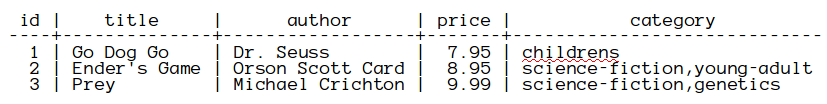
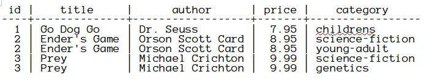
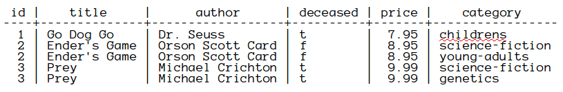
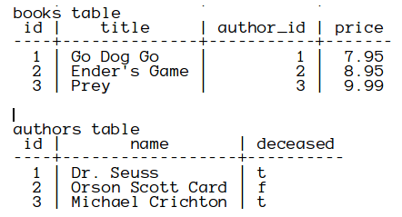
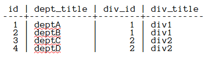
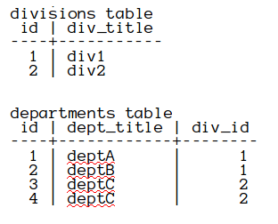
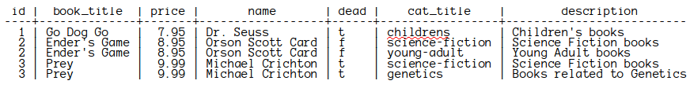

Objective 1 - Designing a relational database using normalization
The basic reasons for database normalization is to avoid duplicate data and to avoid problems with querying the database.
First Normal Form
Each field in the tables are atomic (cannot be broken into smaller values) and there are no repeating groups of fields.
Consider a table with book information that looks like this:

In this case a book might have more than one category. For example, a book might have categories of science-fiction and young-adult. A scenario that this storage would clearly make more difficult, is is you were trying to query the books table for all books that matched a certain category. Rows that had multiple categories would not be able to match any single category exactly. So, at the very least it would be difficult to figure out how many books match a single category.
A table in first normal form would not allow the storing multiple categories in one row. To place this data into First Normal Form (1NF), you could change the table to look like this:

As you can see, just getting a database table into 1NF, does not avoid duplication of data. Clearly some of the data in row 2 is duplicated in row 3, as is the data in row4 duplicated in row 5. So, just making tables meet 1NF is not enough.
Second Normal Form
In Second Normal Form (2NF), the tables are in first normal form and all of the fields depend directly on the table's primary key. Violations of 2NF usually occur because a table actually consists of information for more than one entity. Ensuring that each different entity is in a separate table is a first step towards obtaining 2NF. By making it so that the primary key is a single column in such tables, 2NF is achieved.
Suppose that in the books table, you decided to keep track of whether or not the author is deceased. You might have a table that looks like this:

As you can see, the deceased field does not directly depend on the primary key (id). This leads to complications because if Orson Scott Card were to pass away, then the value for the deceased field has to be updated in two places. In fact, the value for the deceased field would have to be updated for every row that has Orson Scott Card as the author.
This can be addressed by separating the book data and the author data into two separate tables. This is shown below:

Here the author_id field in the books table are the values from the id field of the authors table.
Third Normal Form
The tables are in second normal form and the fields besides the primary key do not depend on another non-primary key field. If you have fields that could depend on another non-primary key field, this is called a transitive dependency . Removing a transitive dependency will reduce duplicate data and also ensure data integrity.
If a workplace has departments within divisions, the department and division data should be kept in separate tables. Consider the following table.

Although this may seem okay, the div_title field depends on the div_id field and the div_id field is not the primary key. So the id field has a transitive dependence on the div_title field through the div_id field. This is not good because if the div_title changes, this will need to be changed in more than one place. Once again, the problem is that different entities have not been put into different tables. The solution is to break the data into two tables, divisions and departments as shown below:

Example of Normalization
Suppose that you have a data table that looks like this:

To normalize this data, start by identifying the different entities and the fields that are properties of each entity.
One entity is books. The book_title and price certainly are properties of a book. Because we are keeping track of whether the author is dead or now, authors needs to be in its own table with dead as a field in that table. The other entity is categories. The cat_title and description are properties of the categories table.
Designing the tables
Once you have identified the tables and their properties, the next step is to design the tables. You should start with the tables that other tables depend upon. Since books depends on authors, you should start with the authorstable. After you design those tables, you can go on to the books table. The relationship between books and categories is that for a given book, there can be more than one category. Also, a given category can be applied to more than one book. So, the relationship between books and categories is a many-to-many relationship. This means that you need a bridge table to join the books and categories table. Here are some SQL scripts that show how this could be done:
create table authors(
id serial,
name varchar(200),
dead boolean,
primary key (id)
);
create table books(
id serial,
title varchar(100),
author_id integer references authors(id),
price decimal(6,2),
primary key (id)
);
create table categories (
id serial,
title varchar(50),
description text,
primary key (id)
);
create table book_category (
id serial,
book_id integer references books(id),
category_id integer references categories(id),
primary key (id)
);We create the authors table on lines 1-6 first, because the books table defined on lines 8-14 depends on the authors.id field. After the books table, we define the categories table on lines 16-21. Finally, we define the book_category bridge table on lines 23-28. The book_category table must be defined after the books and categories table, because the book_category depends on both the books table and the categories table.
Adding the data
Now, you can create SQL scripts that add the data into the tables. The data must be added in the correct order so that the foreign key constraints will not be violated.
insert into authors (name,dead) values
('Dr. Seuss','t');
insert into authors (name,dead) values
('Orson Scott Card','f');
insert into authors (name,dead) values
('Michael Crichton','t');
insert into books (title,author_id,price) values
('Go Dog Go',1,7.95);
insert into books (title,author_id,price) values
('Ender''s Game',2,8.95);
insert into books (title,author_id,price) values
('Prey',3,9.99);
insert into categories (title, description) values
('childrens','Children''s books');
insert into categories (title, description) values
('science-fiction','Science Fiction books');
insert into categories (title, description) values
('young-adult','Young Adult books');
insert into categories (title, description) values
('genetics','Books related to Genetics');
insert into book_category (book_id,category_id) values (1,1);
insert into book_category (book_id,category_id) values (2,2);
insert into book_category (book_id,category_id) values (2,3);
insert into book_category (book_id,category_id) values (3,2);
insert into book_category (book_id,category_id) values (3,4);After inserting the data, you should create a view that joins the data so that you can verify that the original data is preserved. Here is such a view.
create or replace view book_category_view as
select books.id,books.title as book_title,books.price,authors.name,
authors.dead,categories.title as cat_title,
categories.description from categories join
book_category on categories.id=book_category.category_id
join books on book_category.book_id=books.id join
authors on books.author_id=authors.id;Querying that view should give the same data as the original unnormalized data.